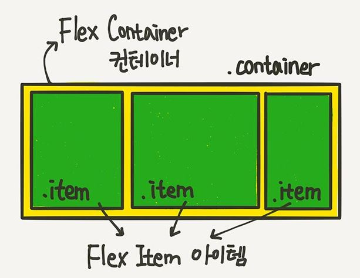
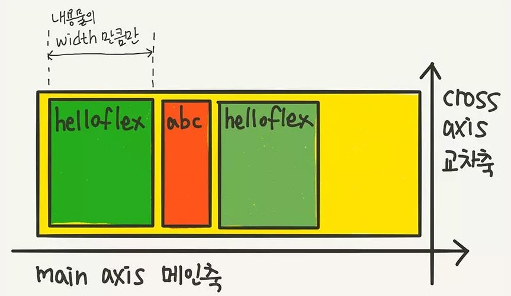

css3_flexbox 로 레이아웃 만들기
flexbox 의 기본구조


flexbox(flexible box)의 container box 속성: 모든 아이템에 동일하게 적용되는 속성
- display:flex;
- flxible 레이아웃을 만들기 위해 가장 먼저 설정합니다.
아이템이 가로 방향 배치되며 크기는 내용의 너비와 높이만큼 설정됩니다.
- flex-direction : column;
- 위에서 배치된 가로방향(기본값 row)을 세로방향으로 바꾸어 줍니다. 이것을 메인 축이라고 합니다.
- flex-flowrowwrap;
- 위의 2개의 속성을 한번에 지정하는 단축 속성입니다.
- justify-content:center
- 메인축으로 정렬되는 방법을 설정합니다.
아이템들을 가운데로 정렬합니다. 기본값은 flex-start 이고 여러가지 방법을 테스트해보세요.
- align-itemsLcenter;
- 메인의 반대 축으로 정렬되는 방법입니다. 수직축으로 가운데 정렬합니다.
기본값은 stretch 입니다. 기본값외에는 아이템의 박스 크기로 변경됩니다.
- align-content:flex-start;
- flex-srap:srap;으로 설정되었을 때 반대 축(수직 축) 정렬방법 입니다. 기본값은 stretch
flexbox(flexible box)의 item box 속성 : 아이템마다 다르게 줄 수 있는 속성
- flex-basis:100px;
- 아이템의 기본 크기를 모두 100px로 설정합니ㅏㄷ.(방향이 row일때는 너비, column 일때는 높이 입니다.)
기본값은 auto이며 이때는 컨텐츠의 크기(컨텐츠의 width 값) 입니다.
- flex-grow:1;
- flex-basis 에서 설정된 값보다 커지도록 합니다. 기본값은 0으로 컨텐츠의 크기로 고정됩니다.
아이템마다 다르게 하여 남은 공간을 다른 크기로 할당할 수 있습니다. 컨테이너가 커질때 다른 크기로
변경되는 것이 확인됩니다.
- flex-shrink:150px;
- flex-basis 보다 작아지도록 설정합니다. 기본값은 1 입니다. 주로 컨테이너가 작아질 때 값을 0으로 하여
고정 크기 박스로 만들 때 사용합니다.
- flex
- 위의 3가지 속성값을 한 번에 쓸 수 있는 단축 속성입니다. grow, shrik, basis 순서 입니다.